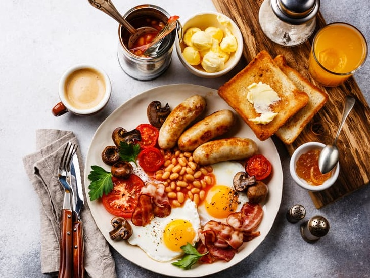
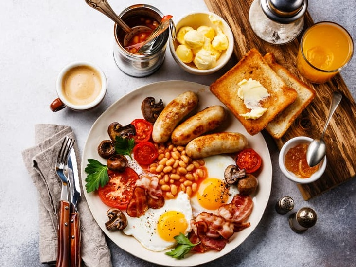

Breakfast is the first meal of the day usually eaten in the morning. The word in English refers to breaking the fasting period of the previous night. Various "typical" or "traditional" breakfast menus exist, with food choices varying by regions and traditions worldwide.
In Old English, a regular morning meal was called morgenmete, and the word dinner, which originated from Gallo-Romance desjunare ("to break one's fast"), referred to a meal after fasting. Around mid-13 century, that meaning of dinner faded away, and around 15th century "breakfast" came into use in written English to describe a morning meal.
 
